Setting up SSH with password and key authentication
Secure Shell (SSH) and using it effectively is paramount in secure remote device access and management. In this guide we'll first run through setting up password SSH access before disabling this and moving to the preferred method; key authentication.
Lab Setup
- GNS3 as the network emulation software.
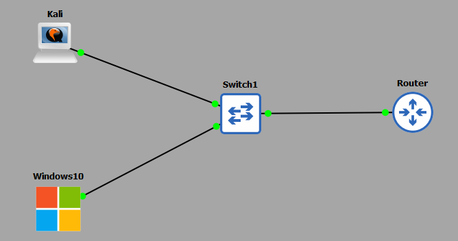
- I have my 2 PC's (Kali and Windows10).
- A CISCO layer 2 switch (Switch1).
- A home router.
IP Schema
The IP schema for this lab will be 192.168.122.0/24. This will give us 254 useable addresses (256 - broadcast address - network address). The subnet mask will be 255.255.255.0. My machines will be allocated IP addresses through the DHCP service running on my router.
SSH with password authentication
First, let's see what IP addresses my 2 PC's have been allocated; my Kali machine is: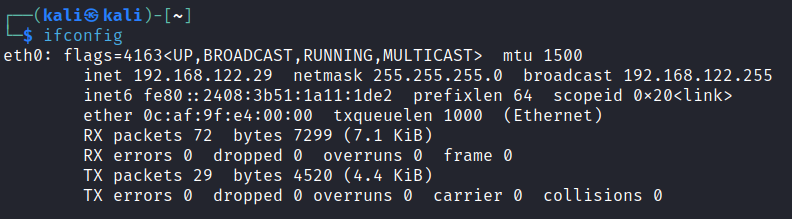
My Windows10 machine is: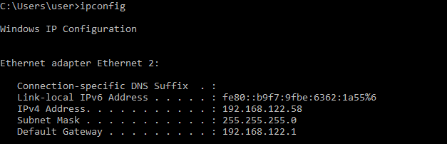
We are going to enable SSH access on our Kali machine. To do this, we need to edit our SSH configuration to allow password authentication. We access this file with the following command:sudo nano /etc/ssh/sshd_configWe are going to uncomment the following 2 settings, 'Port 22' and 'PasswordAuthentication yes'.
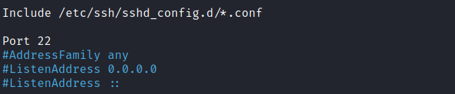
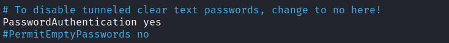
We now need to start the SSH server on the Kali machine: At this point we ready to connect via SSH from our Windows10 machine. In this guide I am using an application called PuTTY - it has a ton of functionality, but I will just be using it for its SSH capability.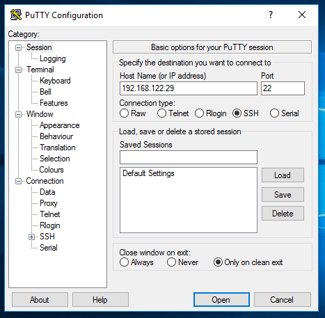
All I have done is started up the application and entered the IP address of the Kali machine into the 'Host Name or IP address' field and the port of 22. Remember this is the port we uncommented out on our SSH config on the Kali machine. If we were to change this default SSH port, we would need to enter that port here also. All we need to do now is click 'Open' and PuTTY will attempt to establish a SSH session for us: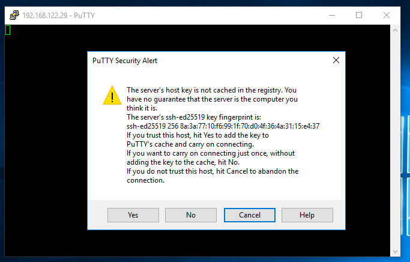
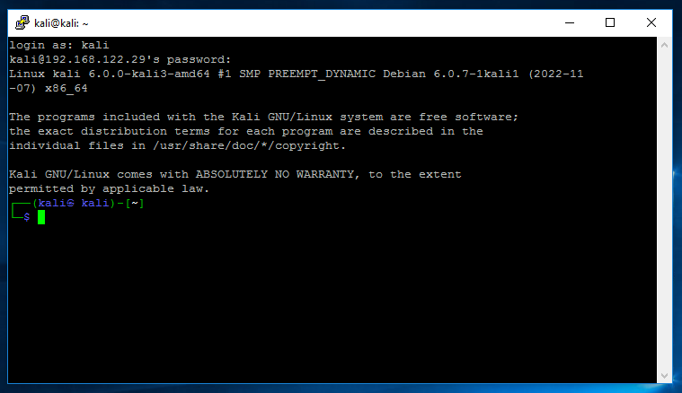
PuTTY opened a session for us and promoted us for a username and password, which is my case was 'kali' and 'kali' (press yes on the host key acceptance). Remember, the username and password are credentials that exist on the Kali machine not the Windows10 machine. At this point you now have a successful and authenticated SSH session from the Windows10 to Kali machines.SSH with key authentication
works. We now have three independent zones. We will build on this topology in future guides with NAT and ACLs to allow certain traffic into the DMZ from the OUTSIDE and certain traffic into the INSIDE from the DMZ. While password authentication is a quick win, it's not the most secure. It is susceptible to password attacks such as bruteforce and offline hash cracking if password dumps have been acquired etc. The following process we are now going to follow is:- Create a private/public key pair (4096-bits).
- Using the public key, setup an authorised key file on the Kali machine.
- Transfer the private key to the Windows10 machine.
- On the Windows10 machine, convert the private key to a PuTTY Private Key (.ppk) file for use with PuTTY.
- On the Kali machine re-configure the SSH configuration file to only accept key authentication.
- SSH into the Kali machine from Windows10 using PuTTY in conjunction with the private key file for authentication.
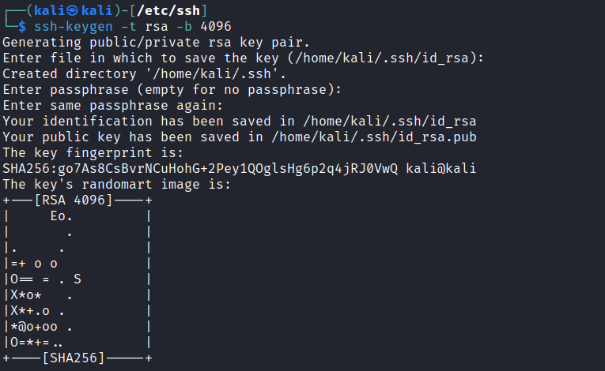
Notice I have set the parameters to RSA at a strength of 4096-bits. You will also notice the keys have been saved in the directory /home/kali/.ssh/ not the directory I am currently in /etc/ssh. I am now going to create a file authorized_keys which will be a carbon copy of my public key file id_rsa.pub: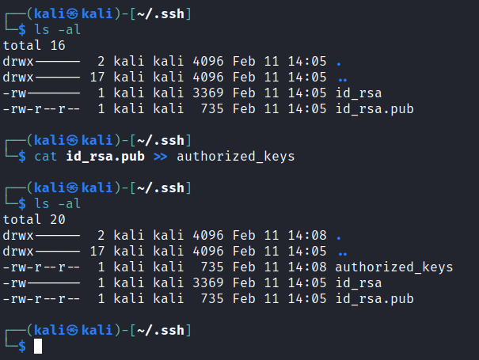
At this stage, make sure the permissions have been set correctly for this file, as well as the .ssh folder: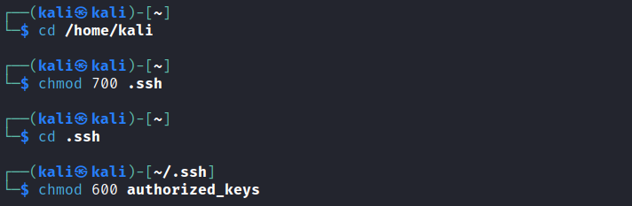
The next step is to transfer our private key (id_rsa) to our Windows10 machine. Luckily for us PuTTY comes packaged with CLI tool that will allow us to easily do this. On my Windows10 host I open a CMD window and run the following: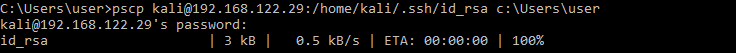
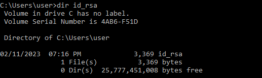
All this is doing, is using the PuTTY Secure Copy (pscp) application to log into our Kali machine and download the directed file id_rsa. It is then placing it in my Windows10 accounts user directory. At this point we need to convert the private key to a PuTTY readable private key file. To do this we will use another application packaged with PuTTY called PuTTYgen. To find it simply open Start and start typing 'puttygen', it should quickly show up: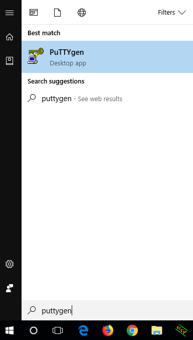
Load this application, select conversions and then import key: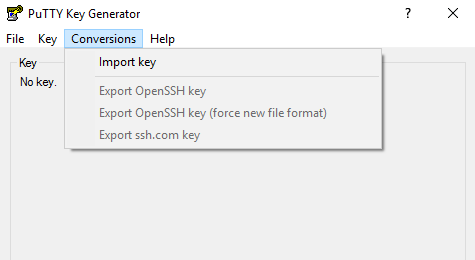
It will ask you to select the private key file you want to import - this will be the file we downloaded from the Kali machine: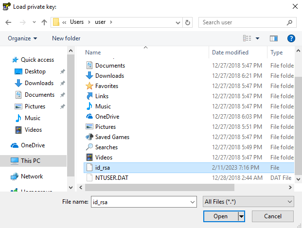
Once loaded in, select save private key and choose a location to save to: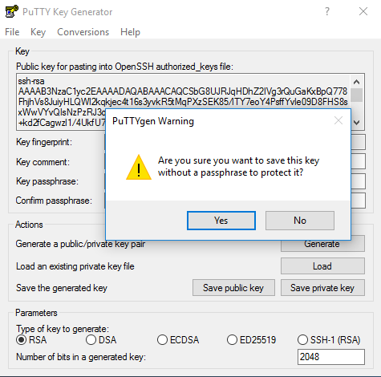
I chose not to protect it with a passphrase but in reality, you really should for the added protections. I saved my key to the desktop: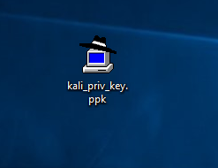
Let's switch back to our Kali machine and get it ready for SSH key authentication. We are going to be editing the same SSH configuration file again:sudo nano /etc/ssh/sshd_configThis time we will re-comment PasswordAuthentication:
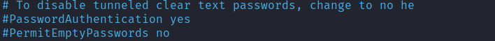
We need to enable key authentication and tell our SSH service where to look for keys, I have highlighted them here: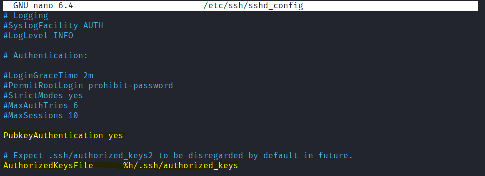
Notice the authorized_keys file is the one we created earlier containing our public key. Save the file and exit. At this point we best restart our SSH service:sudo service ssh restartJumping back our Windows10 machine we are now ready to attempt a SSH session with key authentication. Load the PuTTY client and select auth > credentials. Click browse and select the private key file we created:
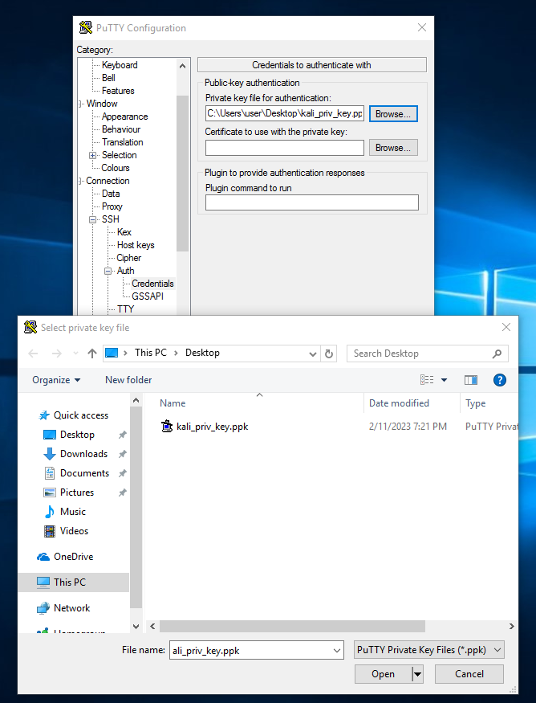
Once entered, move back up to session and in the hostname/IP we enter our username (username on the kali machine) followed by the IP address of the Kali machine. We also ensure port 22 is selected:kali@192.168.122.29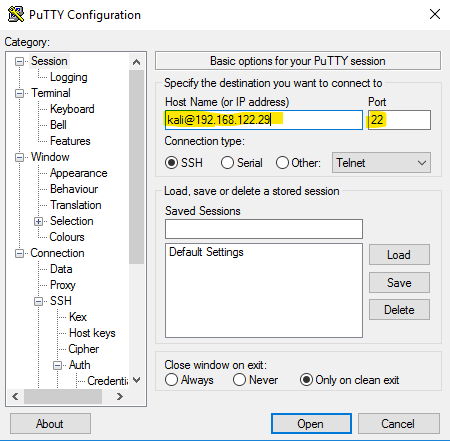
I now click open and key authentication occurs: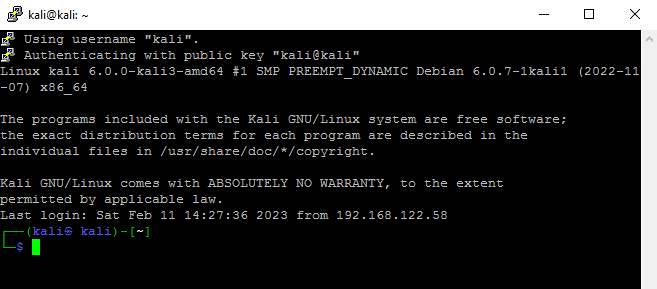
At this point we were straight into the Kali machine without the requirement of entering a username or password. The key pair itself authenticates us. At this stage we are pretty much ready to go - it goes without saying though, the private key file is now the key to the kingdom.